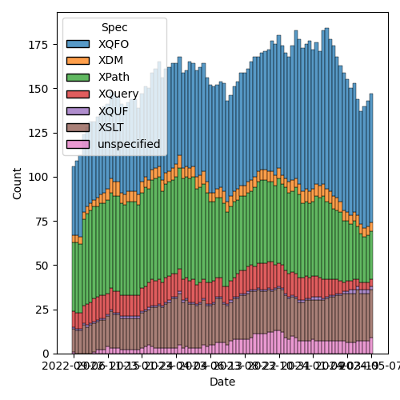
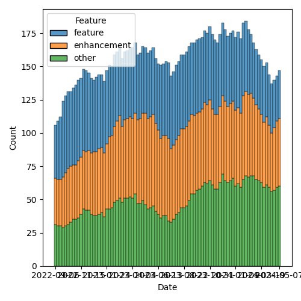

QT4 CG Meeting 077 Minutes 2024-05-14
Table of Contents
- Minutes
- Summary of new and continuing actions
[0/5] - 1. Administrivia
- 2. Technical Agenda
- 2.1. PR #1206: 1195 Hash Function: CRC-32
- 2.2. PR #1068: 73 fn:graphemes
- 2.3. PR #1205: 1196 Math Functions: math:e, math:sinh, math:cosh, math:tanh
- 2.4. PR #1204: 1203 Define out-of-range conditions in CSV get function
- 2.5. PR #1198: 1189 distinct document order
- 2.6. PR #1117: 1116 Add options param to unparsed-text
- 3. Any other business
- 4. Adjourned
Meeting index / QT4CG.org / Dashboard / GH Issues / GH Pull Requests
Minutes
Approved at meeting 078 on 21 May 2024.
Summary of new and continuing actions [0/5]
[ ]QT4CG-063-06: MK to consider refactoring the declare item type syntax to something like declare record[ ]QT4CG-071-06: NW to clarify the cases that are distinguished by the leading empty string in path segments[ ]QT4CG-072-03: NW to clarify the round-tripping of URIs[ ]QT4CG-073-01: NW to proceed with the records/options proposal and make a PR.[ ]QT4CG-077-01: DN to create an issue for adding Blake-3.[ ]QT4CG-077-02: JK to correct the reference to TR29.[ ]QT4CG-077-03: MK to add a note about document order across documents[ ]QT4CG-077-04: MK to review inconsistencies discovered in review of #1117
1. Administrivia
1.1. Roll call [12/12]
[X]Reece Dunn (RD)[X]Sasha Firsov (SF)[X]Christian Grün (CG)[X]Joel Kalvesmaki (JK)[X]Michael Kay (MK)[X]Juri Leino (JLO)[X]John Lumley (JLY)[X]Dimitre Novatchev (DN)[X]Wendell Piez (WP)[X]Ed Porter (EP)[X]C. M. Sperberg-McQueen (MSM)[X]Norm Tovey-Walsh (NW). Scribe. Chair.
1.2. Accept the agenda
Proposal: Accept the agenda.
Accepted.
1.2.1. Status so far…

Figure 1: “Burn down” chart on open issues

Figure 2: Open issues by specification

Figure 3: Open issues by type
1.3. Approve minutes of the previous meeting
Proposal: Accept the minutes of the previous meeting.
Accepted.
1.4. Next meeting
The next meeting is scheduled for Tuesday, 21 May 2024.
RD gives regrets. JLY gives regrets for three weeks.
1.5. Review of open action items [3/7]
[ ]QT4CG-063-06: MK to consider refactoring the declare item type syntax to something like declare record[ ]QT4CG-071-06: NW to clarify the cases that are distinguished by the leading empty string in path segments[ ]QT4CG-072-03: NW to clarify the round-tripping of URIs[ ]QT4CG-073-01: NW to proceed with the records/options proposal and make a PR.[X]QT4CG-075-01: MK to drop the deterministic option and raise it as a separate issue.[X]QT4CG-075-02: MK to define sequence-concatenation more formally with links where appropriate[X]QT4CG-076-01: MK to draft an editorial proposal to add more examples.
1.6. Review of open pull requests and issues
1.6.1. Merge without discussion
The following PRs are editorial, small, or otherwise appeared to be uncontroversial when the agenda was prepared. The chairs propose that these can be merged without discussion. If you think discussion is necessary, please say so.
Proposal: Accept without discussion.
Accepted.
1.6.2. Close without action
It has been proposed that the following issues be closed without action. If you think discussion is necessary, please say so.
- Issue #572: fn:evaluate-xpath() function
- Issue #369: Namespaces for Functions
- Issue #162: Support unbounded variadic functions on map parameter keys
- Issue #146: fn:apply with last two arguments (array, map) for the positional and keyword args in a func-call
Proposal: Close without further action.
Accepted.
2. Technical Agenda
Moved #1181 into the agenda.
2.1. PR #1206: 1195 Hash Function: CRC-32
See PR #1206.
CG introduces the issue. Proposes we add CRC-32.
- RD: Do we need to specify string output?
Some discussion of how to return a long.
- DN: Possible values for the method name, are they something all implementation should provide.
- CG: Yes, the current set is the three values listed, and I propose adding one more. Implementations can always add more.
- DN: Then I propose that we add Blake-3. It has no known security issues and it’s extremely fast.
- RD: There’s an Apache commons implementation in Java.
ACTION: QT4CG-077-01 DN to create an issue for adding Blake-3.
Some discussion of how the result is represented in hexBinary.
- MSM: Observes that a Java long is 64 bits so we don’t want some libraries to return 64 bits of hexBinary.
- JLY: Users have to know that they’re working with bits. If the result of the calculation is 32 bits, then that’s what you have to produce.
- DN: I think we’re in a position to have a hashset type in the future.
- MSM: I think JL is right, but if we expect users to do that, then the description of these algorithms needs to say how many bits are to be returned.
- RD: My point was that it might be worth adding a comment saying that the computed long value is represented as a 32 bit hexBinary value.
Proposal: Accept this PR.
Accepted.
2.2. PR #1068: 73 fn:graphemes
See PR #1068
JK reviews the PR issue and the PR.
- JK: I became convinced that a lot of non-latin based language users would
really benefit from this function. The function
charactersisn’t sufficient.- … Unicode provides a definition of graphemes, see TR15.
- … (JK walks through the examples.)
- … Unicode defines two different types of graphemes, I’m proposing we ignore the “legacy” graphemes.
- … I’ve converted the Unicode tests to the QT4 test suite.
- CG: I think it’s easy to implement in Java.
- MSM: The link to TR29 is in error - it points to TR 15.
ACTION: QT4CG-077-02 JK to correct the reference to TR29.
Proposal: Accept this PR.
Accepted.
2.3. PR #1205: 1196 Math Functions: math:e, math:sinh, math:cosh, math:tanh
See PR #1205.
- CG: I propose to add a few more functions mentioned in the IEEE specification.
- …
math:e,math:sinh,math:cosh,math:tanh - … It’s unclear what an “invalid operation” is in this context.
- …
- RD: Usually these functions are defined in a specific, limited range, say 0 to ½pi
Some discussion of invalid operations; concluding that nothing needs to be changed.
- JL: It’s a long time since I used these, but I don’t think there’s a problem here. The invalid one would come in where you were doing the inverse functions.
Further discussion of invalid values.
- DN: I see a new constant. If this continues, we’ll have lots of new functions
that aren’t really function. There are constants in chemistry, physics, etc.
Should we rather have a
constantfunction? - CG: I think we should have a separate discussion for that.
- MSM: If I’ve understood correctly, they’re defined in IEEE as functions.
Proposal: Accept this PR.
Accepted.
2.4. PR #1204: 1203 Define out-of-range conditions in CSV get function
See PR #1204.
MK introduces the issue.
- MK: This is simply an omission from the CSV spec.
- … The change is simply to say that if the value of the row is out of range, we return a zero length string.
- … This is for parallelism with the rule for a column out of range.
Proposal: Accept this PR.
Accepted.
2.5. PR #1198: 1189 distinct document order
See PR #1198.
MK introduces the issue.
- MK: This is a primitive invoked by quite a few operators. This makes it directly accessible as a function.
MK describes the new function, distinct-ordered-nodes.
- JL: Does it have any differences from the application of the union operator?
- MK: No, but I didn’t want to define it in terms of those, because I think they should be defined on top of this primitive.
- JLO: What happens if we have a node set spanning several documents?
- MK: At the moment, I just refer to document order. There’s a definition there for the case of multiple documents.
- DN: I wanted to raise the same question as JLO.
- … I commented on this issue, the name of the function is misleading because the order will not always be the same across implementations if there are nodes in different documents. There should be more discussion or perhaps make the function have a different name.
- MK: You can never capture the entire semantics for a function in its name.
- MSM: I’m a little confused. I would have thought that anyone who does serious
work with multiple documents would be expect to know that document order of
documents is implementation dependent.
- … If that’s not always so, I think DN may be correct to say a little more here, but I think MK is also right that we don’t want to repeat things.
- … I would propose just a single note here that calls attention to the fact.
- JLY: I agree a note here would be good.
- WP: I can use a variable to sequence documents. I agree that this can be dealt with by careful glossing. But maybe an example would also help.
Proposal: Accept this PR.
Accepted.
ACTION: QT4CG-077-03 MK to add a note about document order across documents
2.6. PR #1117: 1116 Add options param to unparsed-text
See PR #1117
MK introduces the issue.
- MK: All this does is add an option to normalize newlines, false by default.
- We added normalization but discovered it caused backwards compatibility problems.
- DN: I hope there are defaults for these options.
- MK: Oh, yes, and the default is to be compatible with what we had before.
- JLO: I like this change. It’s something I can build on for other functions.
- … Are there any more options that we could use here?
- … What about the options that we can pass to the collection function the URI?
- MK: With anything that reads XML, there are lots of potential options.
- CG: I think we should drop this option or to make it have specific values.
Some discussion of what the effects are.
ACTION: QT4CG-077-04 MK to review inconsistencies discovered in review of #1117
3. Any other business
None heard.
Next week: Agenda for Prague; perhaps have a Zoom wrap-up at the end of each day.